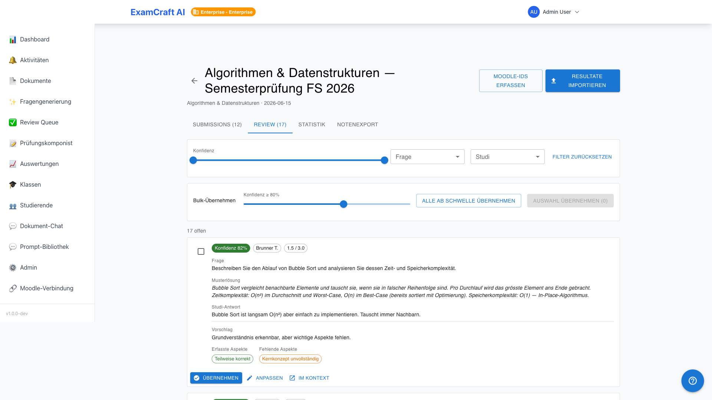
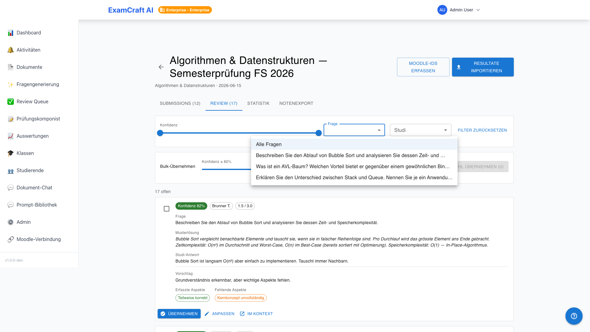
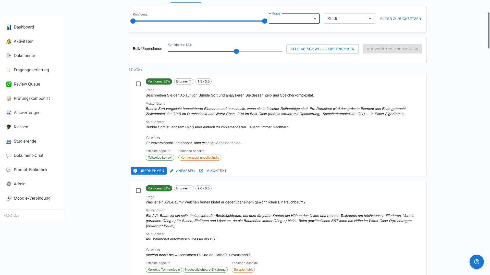
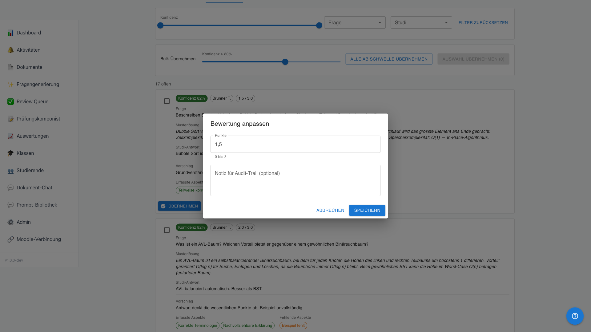
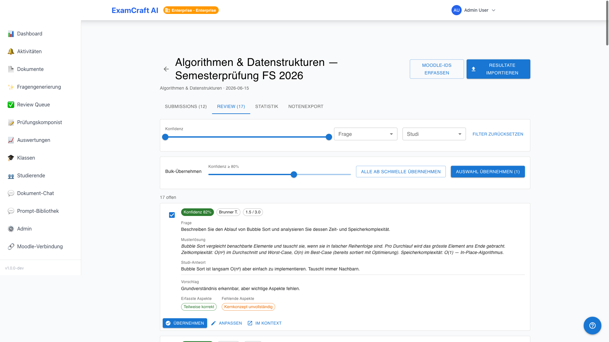

Review and Grading
Open Questions Only
Multiple-choice and true/false questions are scored deterministically — no review required. This section applies exclusively to open questions with AI suggestions.
The Review Queue shows all AI grading suggestions for open questions, sorted by confidence in ascending order — the most uncertain cases first. Route: Review tab in /auswertungen/:examId/submissions.

How AI Grading Works
For each open question, the AI analyses the answer in comparison to the model solution and assigns points (0 to maximum), a confidence score (0–100 %), and a list of fulfilled and missing aspects. A confidence of 0 % indicates that AI grading failed — the case must be graded manually.
Filters
| Filter | Options |
|---|---|
| Question | Only submissions for a specific question |
| Students | Only submissions from a specific person |
| Confidence | Range from–to, e.g. 0–50 % for uncertain cases |

Grading Card

Each card shows:
| Element | Description |
|---|---|
| Question | Question text |
| Model Solution | Expected answer |
| Submitted Answer | What the exam participant answered |
| AI Suggestion | Points + confidence badge (green ≥ 80 %, yellow 50–79 %, red < 50 %) |
| Matched aspects | Fulfilled aspects of the model solution (green chips) |
| Missing aspects | Missing aspects (red chips) |
Actions per Card
| Action | Behaviour |
|---|---|
| Accept | AI suggestion is saved as the final grade |
| Adjust | Inline editor opens — enter points and optional note |
| Open in Context | Open the full submission in the drawer |

Bulk Approval

Click Accept All or select multiple cards via checkbox and use Accept Selection. In the dialog, a confidence threshold can be set — only suggestions at or above this value are accepted; uncertain cases remain for manual review.
Manual Override for MC and True/False
Automatically scored multiple-choice and true/false answers can also be overridden. Open the detail drawer of the submission and click Override on the desired question. Enter the new point value and an optional justification.
Audit Trail
Every grading change — Accept, Adjust, Override — is logged with a timestamp and the user who made the change. The logs are accessible to admins in the backend logs.